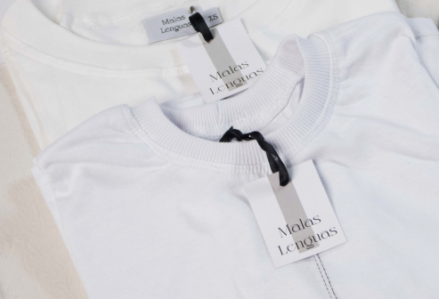
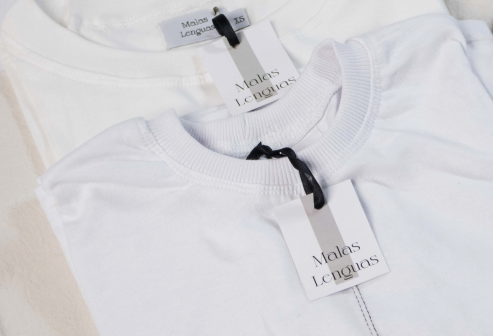

.png)
.png)
.png)
.png)
Proyecto Textil
Tenemos el objetivo de desarrollar
una marca textil compuesta y diseñada
por mujeres en situación de encierro,
en donde podamos brindar
herramientas de capacitación laboral
para una futura reinserción social.
El valor agregado del producto
es la fomentación de espacios y redes
de trabajo productivo, inserción social
formativo y educativo hacia el interior
y hacia el exterior de las personas
privadas de su libertad.
.png)
.png)
.png) 

Prendas con
transparencia
Consideramos el hacer y consumir la moda
de manera consciente e intencionada, por
eso nuestras prendas son realizadas en pequeñas
cantidades, de forma atemporal, con telas nobles,
prestándole atención a los pequeños detalles
y a la formación de aquellas que las realizan.
De esta forma también desglosamos el precio
de nuestras prendas para que los clientes entiendan
los costos de producción y materiales, asegurando
un equilibrio entre calidad y precio justo.
Catálogo

Camisa

Pañuelo

Saco Sobretodo

Pantalones cargo wide
Camisa
Pañuelo
Saco Sobretodo
Pantalones cargo wide
Reinserción Laboral
En Malas Lenguas buscamos a través
de la capacitación textil en mujeres privadas
de la libertad, brindar las herramientas necesarias
para una reinserción social y laboral exitosa.
Muchas veces este es un proceso lento,
ya que no discrimina a aquellas sin conocimiento
previo en la costura. Se las capacita en la
confección de moldes y posteriormente en las
prendas que se vayan a elaborar.